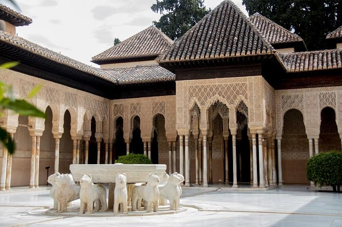

| |
Alhambra. Patrimonio de la Humanidad |
|---|

| |
Alhambra. Patrimonio de la Humanidad |
|---|

Cuando Mohamed V sucedió a su padre Yusuf I, no se limitó a terminar las reformas que éste había comenzado, sino que comenzó a construir lo que sería su gran obra, el magnífico legado que nos dejó en la Alhambra: el Palacio de los Leones. Este palacio constituía las estancias privadas de la familia real, y se construyó en el ángulo que forman los Baños y el Patio de los Arrayanes.
En este palacio el arte nazarí alcanza su máximo esplendor, en el que se alcanza una belleza de una sensibilidad y armonía incomparables, donde la luz, el agua, el colorido, la decoración exquisita, convierte a este palacio en una maravilloso placer para los sentidos, en el que se deja atrás el periodo anterior de decoraciones más abstractas y geométricas para dar paso a un estilo más naturalista, sin duda influjo de lo cristiano, acrecentado por la amistad que mantuvieron Mohamed V y Pedro I, el Cruel, por aquel entonces monarca cristiano.
El palacio está compuesto por un patio central rodeado de galerías de columnas a modo de claustro cristiano, que permite el acceso a distintas salas: al oeste la de los Mocárabes, al este la de los Reyes, al norte la de Dos Hermanas, Ajimeces y Mirador de Daraxa y al sur la de los Abencerrajes y el Harén.